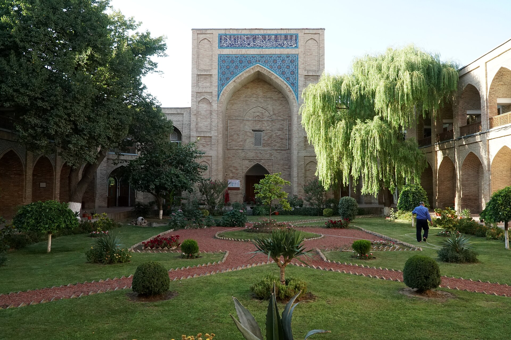

The Volga (Kazan) Tatars in Uzbekistan: how a merchant and educator community took shape
The Volga (Kazan) Tatars are part of Uzbekistan's centuries-old multi-ethnic society. They came to Turkestan mainly in the 19th century, under Tsarist Russia, as merchants, interpreters, teachers and mullahs, acting as trade and cultural intermediaries. Their numbers grew in the Soviet era, including through the 1941–1945 wartime evacuation: the 1979 census recorded 531,205 Tatars, and the 1989 census 467,829 (2.4% of the population). After independence many emigrated to Russia, and by 2017 the number had fallen to about 195,000. This is a community distinct from the Crimean Tatars, a separate people deported here in 1944. History — facts only.

Uzbekistan has been a multi-ethnic society for centuries. One part of it is the Volga (Kazan) Tatars: a community of merchants, educators and craftsmen. The following sets out, facts only, when and why this community formed, its role in trade and education, its population figures, and how it differs from the Crimean Tatars.
Who they are: the Volga (Kazan) Tatars
The Volga (Kazan) Tatars are a Turkic, Muslim people from the Volga-Ural region of Russia. Their language, Kazan Tatar, belongs to the Kipchak-Bulgar group; this language and community are distinct from the Crimean Tatars (a separate people of the Kipchak-Oghuz group). The Tatar community in Uzbekistan is mainly made up of Volga Tatars; but because Soviet censuses did not break the "Tatar" category into sub-groups, the figures do not refer to Volga Tatars alone.
Arrival under Tsarist Russia: trade and intermediaries
In 1763 Tatars were granted the right to trade throughout Russia; Empress Catherine II used them as intermediaries with the Muslims of Central Asia and the Kazakh steppe. Knowing the Turkic language and Islamic customs, Tatar merchants took a large place in Russia–Central Asia trade. In the 19th century they came to Turkestan as merchants, interpreters, teachers and imam-mullahs, serving as trade and cultural intermediaries; literary Tatar served as a language of communication between Russian officials and the empire's Turkic peoples until the end of the 19th century.

Education, printing and influence on Jadidism
Tatars played an important role in spreading education and printing in Turkestan. The printing of books and newspapers in the local Turkic languages was largely linked to the activity of Tatar printers, who brought Arabic-script fonts and printing-press experience. The Jadids (reformist educators) of Central Asia were influenced by the reformist Tatar press and the "usul-i jadid" (new-method) schools. In this way the Tatar community contributed to the spread of modern education and publishing in the region.
The Soviet era and the wartime evacuation
In the Soviet era Tatars remained an educated, professional community in Uzbekistan, especially in the cities. From 1941, under wartime conditions, hundreds of industrial enterprises were relocated to Uzbekistan (for example the Tashkent Mechanical Plant, evacuated in December 1941 and in operation by January 1942). Among the evacuated specialists and workers were Tatars from the Volga-Ural industrial regions — one of the factors that raised the community's numbers.
Population in figures
According to the censuses, the number of Tatars in Uzbekistan grew steadily in the Soviet period: 28,335 in 1926; 147,157 in 1939; 397,981 in 1959; 442,331 in 1970; and 531,205 in 1979 — the highest figure in numerical terms. The last Soviet census, in 1989, recorded 467,829 Tatars (2.4% of the population). By 2017 the number had fallen to about 195,000 (0.6%).
The Sharafbay (Tatar) Mosque in Tashkent
One of the community's monuments is the Sharafbay Mosque in Tashkent (popularly the "Tatar" mosque), built in 1868 by the Tatar merchant and philanthropist Sharafiddin Zaynugobiddinov (Sharafey Bay). Its complex included a mosque, a madrasa and residential buildings. When a street was widened in the 1970s the minaret and part of the wall were demolished; the domed main building survives and has been restored since 2013.
The difference from the Crimean Tatars
The Volga (Kazan) Tatars are a people distinct from the Crimean Tatars. The Crimean Tatars came to Uzbekistan not as merchants or settlers but as a result of the deportation of the entire people, ordered by the USSR State Defense Committee on 18 May 1944 — they were sent mainly to Uzbekistan and suffered heavy losses in the first years. From 1959 Soviet censuses counted Crimean Tatars separately from (Volga) Tatars.
Decline after independence
After 1991, many of Uzbekistan's Tatars began to emigrate to Russia, including to the Republic of Tatarstan; this led to a marked decline in the Tatar community's numbers. As a result, over a few decades the community shrank from 467,829 in 1989 to about 195,000 in 2017.
Legacy and today
Though reduced in number, the Tatar community left its mark on Uzbekistan's history in trade, education, printing and craft. It is part of the region's multi-ethnic history: the Volga Tatars came as a bridge of trade and learning, the Crimean Tatars through the tragedy of deportation. These are two separate histories, but both have entered Uzbekistan's shared memory.

Sources
- Demographics of Uzbekistan — census ethnic-composition table (Tatars: 1926–2017)
- Encyclopedia.com / Britannica — Volga Tatars as traders and intermediaries between Russia and Central Asia (Catherine II, 1763)
- Tatar educators and printers in Turkestan (late 19th – early 20th century) — Historical Ethnology journal
- World Congress of Tatars / Tashkent City Administration — Sharafbay (Tatar) Mosque, Tashkent (built 1868)
- Deportation of the Crimean Tatars (18 May 1944) — a separate deported people, counted apart from Volga Tatars